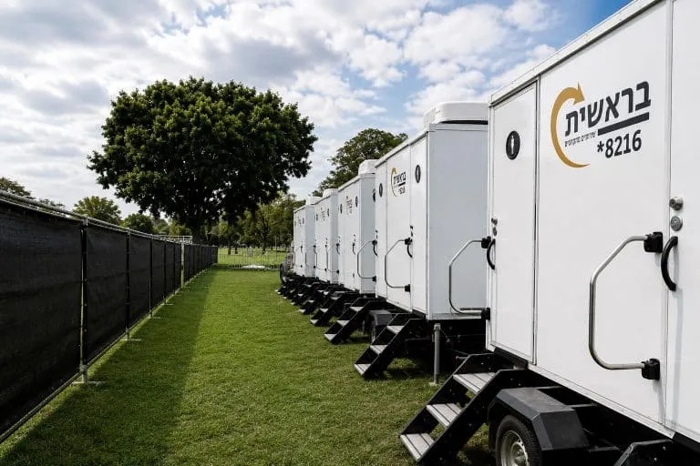

Luxury Toilets for Events: Strong, Durable and Carefully Designed
In event production every detail matters, including the aspect that is sometimes overlooked: the toilet facilities.

Luxury Toilets for Events: Comfort and Style in the Field Too
Today, standard mobile toilets are no longer the accepted standard, and event producers prefer to rent luxury mobile toilets. The following article details what is unique about such toilets and which models exist on the market, so that they can be matched to the specific needs of the event.
The Evolution of Mobile Toilets: From Traditional to Luxury
Mobile toilets are an important component of outdoor events. At the same time, traditional models are associated with discomfort, a lack of aesthetics and unpleasant odours. Out of recognition of the need for improvement, the concept of luxury toilets for event rental was born. It is a game-changing solution that combines usability with sophistication, comfort and style. In fact, such toilets are a modern, inviting alternative to standard toilets, giving guests a perfect answer.
Luxury Toilets: A New Standard at Upscale Outdoor Events
Over the years, luxury mobile toilets have become an integral part of any event where the guest experience is the top priority. Event producers use this solution to ensure a suitable and dignified sanitary provision at any gathering held outside a permanent building.
Luxury toilets suit events of various kinds, including premium events such as weddings in nature, company events, music festivals and VIP areas. As the outdoor event production field continues to develop, such toilet facilities are becoming the standard, and send guests a clear message of investment, care and attention to every detail.
The Unique Features of Luxury Mobile Toilets
Luxury toilets for events include significant upgrades designed to improve the experience of every guest. From spacious interiors and premium fittings to air conditioning, LED lighting and even innovative sound systems. In addition, they also include make-up areas, full-length mirrors and premium toiletries, which give guests a feeling of home, even when attending an outdoor event. In other words, these are facilities that offer a level of comfort and design that rivals that of upscale toilets in a permanent building.
Hygiene, Sanitation and Environmental Responsibility
In addition to the luxury features, luxury toilets for event rental place an emphasis on hygiene and sanitation. Advanced chemical treatment systems that neutralise odours and bacteria, together with frequent cleaning and maintenance, ensure that the toilet area stays clean throughout the event. At the end of the event, the waste is handled efficiently and in a controlled way, and the site is left clean.
When cleanliness and hygiene are given priority, the result is peace of mind for producers and full comfort for guests, who can enjoy the celebration without worry.
How Do You Choose a Luxury Toilet Model for an Event?
Choosing the right model of luxury toilets for events depends on several factors: the number of participants, the duration of the event and the need for accessibility. As the number of guests rises, so does the need for a larger trailer, to prevent queues and crowding. Here are the most recommended models for field events:
- Air-conditioned solar VIP stall: a solution for those who prefer a single stall while keeping a high standard. All the fittings run independently on a solar system, except for the air conditioner, which requires a 220V electrical connection.
- 2-stall trailer: relatively compact luxury toilets, usually divided into a women's stall and a men's stall. They suit events of up to 200 guests.
- 4-stall accessible trailer: to ensure full accessibility, this model includes a dedicated entrance for people with disabilities with a lift, an essential solution at any public event. It is suited to events of up to 350 guests.
- 6-stall trailer: the largest trailer, suited to events of up to 400 guests. The stalls are divided into a women's wing and a men's wing, each of which also includes a spacious entrance lobby, to prevent crowding and improve the experience.
Good to know: to run all the systems in the trailers, a 220V electrical connection on a separate phase is required.
In summary, luxury toilets for events are a worthwhile investment that significantly upgrades the event experience. They offer a combination of comfort and elegance, and set a new standard for mobile sanitation facilities. The cleanliness, fittings and design allow guests to enjoy maximum comfort together with style and a pleasant atmosphere throughout the event.
Bereshit: Luxury Mobile Toilets That Upgrade Any Event
If you are planning an event and looking for toilets to rent, do not settle for less than the best. Bereshit's luxury mobile toilets will give your guests an exceptional experience, even if they are only going to relieve themselves or touch up their make-up. Investing in well-designed, pleasant, well-equipped toilets will make their stay at the venue more comfortable and inviting.
We provide solutions tailored to private events, regional councils, the Ministry of Defense, production companies and large organisations. We commit to giving you too a full service, from the moment of ordering to the end of the event, including a dedicated attendant who ensures the toilets stay clean and pleasant throughout use.
We offer a wide range of models in different sizes and at competitive prices, which can be ordered anywhere in Israel. This way you can choose the exact solution for your personal needs, and enjoy a well-planned, comfortable and pleasant event, without unnecessary worries.
You are welcome to contact us at *8216 and our experienced professionals will be happy to assist you.
Frequently asked questions
What is the main advantage of luxury toilets for events?
They offer a combination of comfort, luxury and elegance, reshape the hosting experience, and contribute to the success of the whole event.
Are special infrastructure requirements needed?
Luxury toilet trailers can be placed anywhere, with no need for a connection to permanent sewage and water infrastructure. However, using the air conditioner and the electronic systems requires a 220V electrical connection on a separate phase.
Are luxury toilets accessible for people with disabilities?
Yes. There is a unique model equipped with an advanced lift, which allows easy entry for people with disabilities as well.
Can luxury mobile toilets be placed anywhere in Israel?
Absolutely. Luxury toilets are available for rent for events in the North, the Center and the South of Israel, with no location restrictions.
Related links
For a quote, call *8216, or leave your details on the Contact page. Advice and quotes with no obligation.